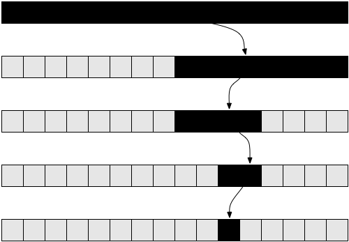
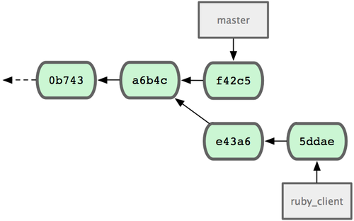
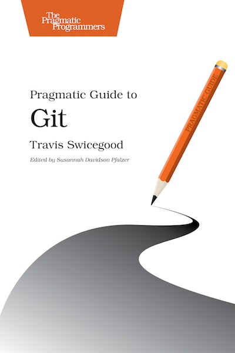
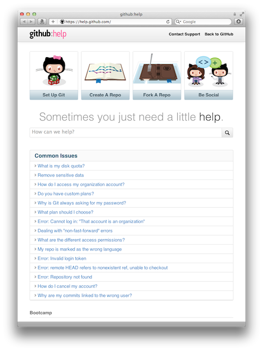

1.7.11.1
1.7.11.1
 10.7
10.7
 command line
command line
git-scm.com/downloads

Problem
You want to split in-progress changes into several commits
git add
Two options
-i, --interactive-p, --patch
$ git add -i
staged unstaged path
1: unchanged +1/-1 trouble/add_interactive.md
*** Commands ***
1: status 2: update 3: revert 4: add untracked
5: patch 6: diff 7: quit 8: help
What now> p
staged unstaged path
1: unchanged +1/-1 trouble/add_interactive.md
Patch update>> 1
staged unstaged path
* 1: unchanged +1/-1 trouble/add_interactive.md
Patch update>>
diff --git a/trouble/add_interactive.md b/trouble/add_interactive.md
index 43c1717..ea061a2 100644
--- a/trouble/add_interactive.md
+++ b/trouble/add_interactive.md
@@ -6,7 +6,7 @@
## `git add`
!SLIDE bullets
-## Two options
+## Two common options
* `-i, --interactive`
* `-p, --patch`
Stage this hunk [y,n,q,a,d,/,e,?]? ?
y - stage this hunk
n - do not stage this hunk
q - quit; do not stage this hunk nor any of the remaining ones
a - stage this hunk and all later hunks in the file
d - do not stage this hunk nor any of the later hunks in the file
g - select a hunk to go to
/ - search for a hunk matching the given regex
j - leave this hunk undecided, see next undecided hunk
J - leave this hunk undecided, see next hunk
k - leave this hunk undecided, see previous undecided hunk
K - leave this hunk undecided, see previous hunk
s - split the current hunk into smaller hunks
e - manually edit the current hunk
? - print help
diff --git a/trouble/add_interactive.md b/trouble/add_interactive.md
index 43c1717..ea061a2 100644
--- a/trouble/add_interactive.md
+++ b/trouble/add_interactive.md
@@ -6,7 +6,7 @@
## `git add`
!SLIDE bullets
-## Two options
+## Two common options
* `-i, --interactive`
* `-p, --patch`
Stage this hunk [y,n,q,a,d,/,e,?]? y
*** Commands ***
1: status 2: update 3: revert 4: add untracked
5: patch 6: diff 7: quit 8: help
What now> q
Bye.
$ git status
# On branch master
# Changes to be committed:
# (use "git reset HEAD <file>..." to unstage)
#
# modified: trouble/add_interactive.md
#
Problem
Where did a defect first occur?
git bisect
Binary search

Short Help
$ git bisect
Usage: git bisect [help|start|bad|good|skip|next|reset|visualize|replay|log|run]
Longer Help
$ git bisect help
Usage: git bisect [help|start|bad|good|skip|next|reset|visualize|replay|log|run]
git bisect help
print this long help message.
git bisect start [--no-checkout] [<bad> [<good>...]] [--] [<pathspec>...]
reset bisect state and start bisection.
git bisect bad [<rev>]
mark <rev> a known-bad revision.
git bisect good [<rev>...]
mark <rev>... known-good revisions.
git bisect skip [(<rev>|<range>)...]
mark <rev>... untestable revisions.
git bisect next
find next bisection to test and check it out.
git bisect reset [<commit>]
finish bisection search and go back to commit.
git bisect visualize
show bisect status in gitk.
git bisect replay <logfile>
replay bisection log.
git bisect log
show bisect log.
git bisect run <cmd>...
use <cmd>... to automatically bisect.
Please use "git help bisect" to get the full man page.
Good or bad?
git bisect goodgit bisect bad
Automation
git bisect run <script> <script-arguments>
0if commit is good1-127if commit is bad125if commit cannot be tested
Call off the search
git bisect reset
Intentionally "bad" commits
The database
Demo
This slide deck
Problem
You want a commit from another branch
git cherry-pick
Common options
-e, --edit-n, --no-commit-s, --signoff
Sequencers
--continue--quit--abort
Example

$ git cherry-pick e43a6fd3e94888d76779ad79fb568ed180e5fcdf
Finished one cherry-pick.
[master]: created a0a41a9: "More friendly message when locking the index fails."
3 files changed, 17 insertions(+), 3 deletions(-)

5.3 Distributed Git - Maintaining a Project
http://git-scm.com/book/en/Distributed-Git-Maintaining-a-Project

Problem
You want to search history for content
git grep
A "few" options
$ git help grep
...
SYNOPSIS
git grep [-a | --text] [-I] [-i | --ignore-case] [-w | --word-regexp]
[-v | --invert-match] [-h|-H] [--full-name]
[-E | --extended-regexp] [-G | --basic-regexp]
[-P | --perl-regexp]
[-F | --fixed-strings] [-n | --line-number]
[-l | --files-with-matches] [-L | --files-without-match]
[(-O | --open-files-in-pager) [<pager>]]
[-z | --null]
[-c | --count] [--all-match] [-q | --quiet]
[--max-depth <depth>]
[--color[=<when>] | --no-color]
[--break] [--heading] [-p | --show-function]
[-A <post-context>] [-B <pre-context>] [-C <context>]
[-W | --function-context]
[-f <file>] [-e] <pattern>
[--and|--or|--not|(|)|-e <pattern>...]
[ [--exclude-standard] [--cached | --no-index | --untracked] | <tree>...]
[--] [<pathspec>...]
...
Concise help
- doesn't exist (no
--help) - but, fake it with
-h
$ git grep -h
usage: git grep [options] [-e] <pattern> [<rev>...] [[--] <path>...]
--cached search in index instead of in the work tree
--no-index finds in contents not managed by git
--untracked search in both tracked and untracked files
--exclude-standard search also in ignored files
...
-h don't show filenames
...
A good default
$ git grep --break --heading --line-number --ignore-case 'bisect'
(add --color if not using color.ui in config)
Tip
Assign an alias
$ git config --list
...
[alias]
find = grep --break --heading --line-number --ignore-case
...
$ git find 'bisect'
trouble/bisect.md
6:# `git bisect`
15: $ git bisect
16: Usage: git bisect [help|start|bad|good|skip|next|reset|visualize|replay|log|run]
...
trouble/find_changed_file.md
10: $ git log -- trouble/bisect.md
15: Add note about database to bisect
21: flesh out bisect
...
Demo
This slide deck
Problem
You want to know which commits changed a file
git log -- <path>
$ git log -- trouble/bisect.md
commit 00a439874d7199f49d12068133fcf956c1c675a5
Author: Craig Demyanovich <cdemyanovich@gmail.com>
Date: Sun Jun 17 13:25:41 2012 -0500
Add note about database to bisect
commit 06951596948555c32caf3ab16aaf6043cc8b1436
Author: Craig Demyanovich <cdemyanovich@gmail.com>
Date: Sat Jun 16 22:36:52 2012 -0500
flesh out bisect
commit f339e7b867c9fb768f8925b1ac9943fb8f2a8f72
Author: Craig Demyanovich <cdemyanovich@gmail.com>
Date: Sat Jun 16 20:08:46 2012 -0500
Rough draft of bisect
$ git log -p -- trouble/bisect.md
commit 00a439874d7199f49d12068133fcf956c1c675a5
Author: Craig Demyanovich <cdemyanovich@gmail.com>
Date: Sun Jun 17 13:25:41 2012 -0500
Add note about database to bisect
diff --git a/trouble/bisect.md b/trouble/bisect.md
index ce84d0f..c91667d 100644
--- a/trouble/bisect.md
+++ b/trouble/bisect.md
@@ -68,6 +68,10 @@

### intentionally "bad" commits
+!SLIDE center
+
+### What about the database at each checkout?
+
!SLIDE
## Demo
### This slide deck
...
Problem
You have many commits; you want one
git rebase --interactive
Step-by-step
Sequencers
--continue--skip--abort
Demo
Squashing WIPs
Problem
You lost a commit
(or did you?)
git reflog
How do we lose commits?
Delete them during interactive rebase
# If you remove a line here THAT COMMIT WILL BE LOST.
Maintenance
- manual with the
expireordeletesubcommands - semi-automatic with
git gc - automatic if garbage collection runs
"Emergency fund"
- keeps entries for last 90 days if
git gcruns - see
git help gcfor options likegc.reflogExpire
Demo
Artisan
Q & A
Here on Friday afternoons
craig@8thlight.com
@demmer12
References
git-scm.com
pragprog.com/book/pg_git/pragmatic-guide-to-git

git-scm.com/book
(free)

pragprog.com/book/tsgit/pragmatic-version-control-using-git

help.github.com

cheat gem
cheat.errtheblog.com/
$ gem install cheat
Fetching: cheat-1.3.0.gem (100%)
Successfully installed cheat-1.3.0
1 gem installed
$ cheat git
git:
Setup
-----
git clone <repo>
clone the repository specified by <repo>; this is similar to "checkout" in
some other version control systems such as Subversion and CVS
Add colors to your ~/.gitconfig file:
[color]
ui = auto
...
https://github.com/icefox/git-achievements

gitimmersion.com/